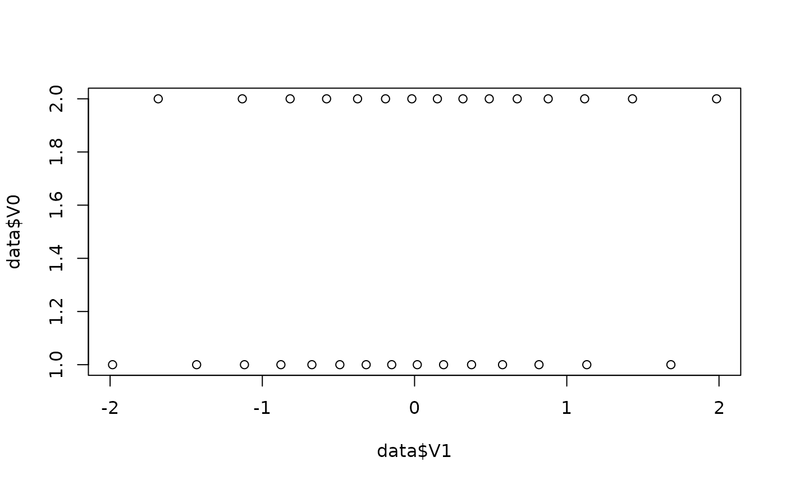

Simulate data with specific characteristics.
simulate_correlation(n = 100, r = 0.5, mean = 0, sd = 1, names = NULL, ...) simulate_ttest(n = 100, d = 0.5, names = NULL, ...) simulate_difference(n = 100, d = 0.5, names = NULL, ...)
Arguments
| n | The number of observations to be generated. |
|---|---|
| r | A value or vector corresponding to the desired correlation coefficients. |
| mean | A value or vector corresponding to the mean of the variables. |
| sd | A value or vector corresponding to the SD of the variables. |
| names | A character vector of desired variable names. |
| ... | Arguments passed to or from other methods. |
| d | A value or vector corresponding to the desired difference between the groups. |
Examples
# Correlation -------------------------------- data <- simulate_correlation(r = 0.5) plot(data$V1, data$V2)#> #> Pearson's product-moment correlation #> #> data: data$V1 and data$V2 #> t = 5.7155, df = 98, p-value = 1.18e-07 #> alternative hypothesis: true correlation is not equal to 0 #> 95 percent confidence interval: #> 0.3366433 0.6341398 #> sample estimates: #> cor #> 0.5 #>#> #> Call: #> lm(formula = V2 ~ V1, data = data) #> #> Residuals: #> Min 1Q Median 3Q Max #> -2.39237 -0.49231 -0.04822 0.51229 2.90372 #> #> Coefficients: #> Estimate Std. Error t value Pr(>|t|) #> (Intercept) 5.829e-17 8.704e-02 0.000 1 #> V1 5.000e-01 8.748e-02 5.715 1.18e-07 *** #> --- #> Signif. codes: 0 ‘***’ 0.001 ‘**’ 0.01 ‘*’ 0.05 ‘.’ 0.1 ‘ ’ 1 #> #> Residual standard error: 0.8704 on 98 degrees of freedom #> Multiple R-squared: 0.25, Adjusted R-squared: 0.2423 #> F-statistic: 32.67 on 1 and 98 DF, p-value: 1.18e-07 #># Specify mean and SD data <- simulate_correlation(r = 0.5, n = 50, mean = c(0, 1), sd = c(0.7, 1.7)) cor.test(data$V1, data$V2)#> #> Pearson's product-moment correlation #> #> data: data$V1 and data$V2 #> t = 4, df = 48, p-value = 0.000218 #> alternative hypothesis: true correlation is not equal to 0 #> 95 percent confidence interval: #> 0.2574879 0.6832563 #> sample estimates: #> cor #> 0.5 #>#> [1] 0.0 0.7#> [1] 1.0 1.7#> #> Call: #> lm(formula = V2 ~ V1, data = data) #> #> Residuals: #> Min 1Q Median 3Q Max #> -2.4316 -1.2903 0.0366 0.9619 3.2946 #> #> Coefficients: #> Estimate Std. Error t value Pr(>|t|) #> (Intercept) 1.0000 0.2104 4.754 1.86e-05 *** #> V1 1.2143 0.3036 4.000 0.000218 *** #> --- #> Signif. codes: 0 ‘***’ 0.001 ‘**’ 0.01 ‘*’ 0.05 ‘.’ 0.1 ‘ ’ 1 #> #> Residual standard error: 1.487 on 48 degrees of freedom #> Multiple R-squared: 0.25, Adjusted R-squared: 0.2344 #> F-statistic: 16 on 1 and 48 DF, p-value: 0.000218 #># Generate multiple variables cor_matrix <- matrix(c( 1.0, 0.2, 0.4, 0.2, 1.0, 0.3, 0.4, 0.3, 1.0 ), nrow = 3 ) data <- simulate_correlation(r = cor_matrix, names = c("y", "x1", "x2")) cor(data)#> y x1 x2 #> y 1.0 0.2 0.4 #> x1 0.2 1.0 0.3 #> x2 0.4 0.3 1.0#> #> Call: #> lm(formula = y ~ x1, data = data) #> #> Residuals: #> Min 1Q Median 3Q Max #> -2.56303 -0.63968 -0.00872 0.72084 2.11843 #> #> Coefficients: #> Estimate Std. Error t value Pr(>|t|) #> (Intercept) 4.663e-17 9.848e-02 0.000 1.000 #> x1 2.000e-01 9.897e-02 2.021 0.046 * #> --- #> Signif. codes: 0 ‘***’ 0.001 ‘**’ 0.01 ‘*’ 0.05 ‘.’ 0.1 ‘ ’ 1 #> #> Residual standard error: 0.9848 on 98 degrees of freedom #> Multiple R-squared: 0.04, Adjusted R-squared: 0.0302 #> F-statistic: 4.083 on 1 and 98 DF, p-value: 0.04604 #># t-test -------------------------------- data <- simulate_ttest(n = 30, d = 0.3) plot(data$V1, data$V0)#> [1] 0.0 0.9#> mean in group 1 #> 0.2689352#> #> Call: #> lm(formula = V1 ~ V0, data = data) #> #> Residuals: #> Min 1Q Median 3Q Max #> -1.69945 -0.66817 -0.08136 0.64241 1.69945 #> #> Coefficients: #> Estimate Std. Error t value Pr(>|t|) #> (Intercept) -0.1345 0.2371 -0.567 0.575 #> V01 0.2689 0.3354 0.802 0.429 #> #> Residual standard error: 0.9184 on 28 degrees of freedom #> Multiple R-squared: 0.02245, Adjusted R-squared: -0.01246 #> F-statistic: 0.6431 on 1 and 28 DF, p-value: 0.4294 #>#> #> Call: #> glm(formula = V0 ~ V1, family = "binomial", data = data) #> #> Deviance Residuals: #> Min 1Q Median 3Q Max #> -1.402 -1.139 0.000 1.166 1.402 #> #> Coefficients: #> Estimate Std. Error z value Pr(>|z|) #> (Intercept) 5.577e-17 3.693e-01 0.000 1.000 #> V1 3.400e-01 4.180e-01 0.813 0.416 #> #> (Dispersion parameter for binomial family taken to be 1) #> #> Null deviance: 41.589 on 29 degrees of freedom #> Residual deviance: 40.909 on 28 degrees of freedom #> AIC: 44.909 #> #> Number of Fisher Scoring iterations: 4 #># Difference -------------------------------- data <- simulate_difference(n = 30, d = 0.3) plot(data$V1, data$V0)#> [1] 0.0 0.9#> mean in group 1 #> 0.3#> #> Call: #> lm(formula = V1 ~ V0, data = data) #> #> Residuals: #> Min 1Q Median 3Q Max #> -1.5011 -0.6212 0.0000 0.6212 1.5011 #> #> Coefficients: #> Estimate Std. Error t value Pr(>|t|) #> (Intercept) -0.1500 0.2206 -0.680 0.502 #> V01 0.3000 0.3119 0.962 0.344 #> #> Residual standard error: 0.8542 on 28 degrees of freedom #> Multiple R-squared: 0.03198, Adjusted R-squared: -0.00259 #> F-statistic: 0.9251 on 1 and 28 DF, p-value: 0.3444 #>#> #> Call: #> glm(formula = V0 ~ V1, family = "binomial", data = data) #> #> Deviance Residuals: #> Min 1Q Median 3Q Max #> -1.436 -1.143 0.000 1.143 1.436 #> #> Coefficients: #> Estimate Std. Error z value Pr(>|z|) #> (Intercept) -3.116e-16 3.711e-01 0.000 1.000 #> V1 4.369e-01 4.515e-01 0.968 0.333 #> #> (Dispersion parameter for binomial family taken to be 1) #> #> Null deviance: 41.589 on 29 degrees of freedom #> Residual deviance: 40.618 on 28 degrees of freedom #> AIC: 44.618 #> #> Number of Fisher Scoring iterations: 4 #>